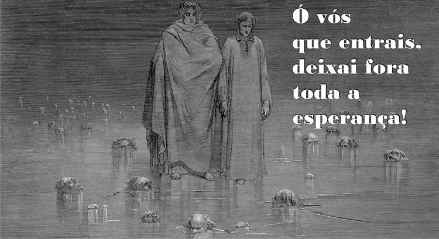
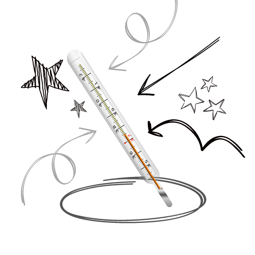
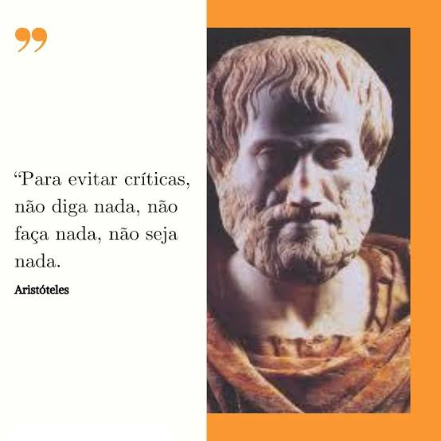
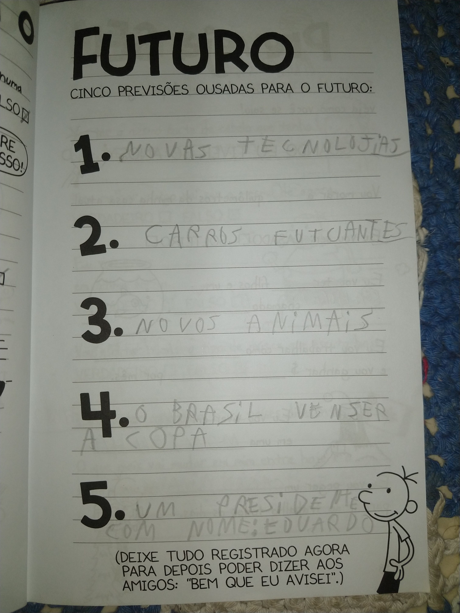
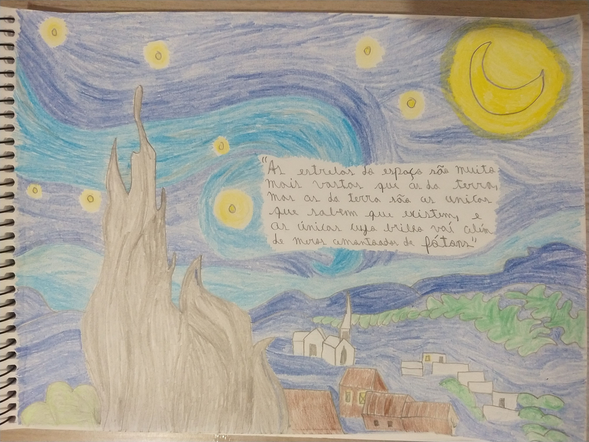
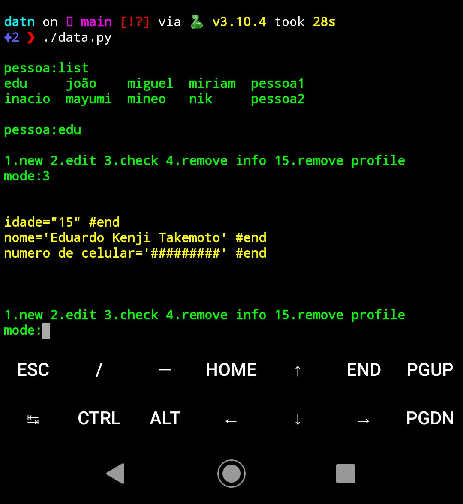
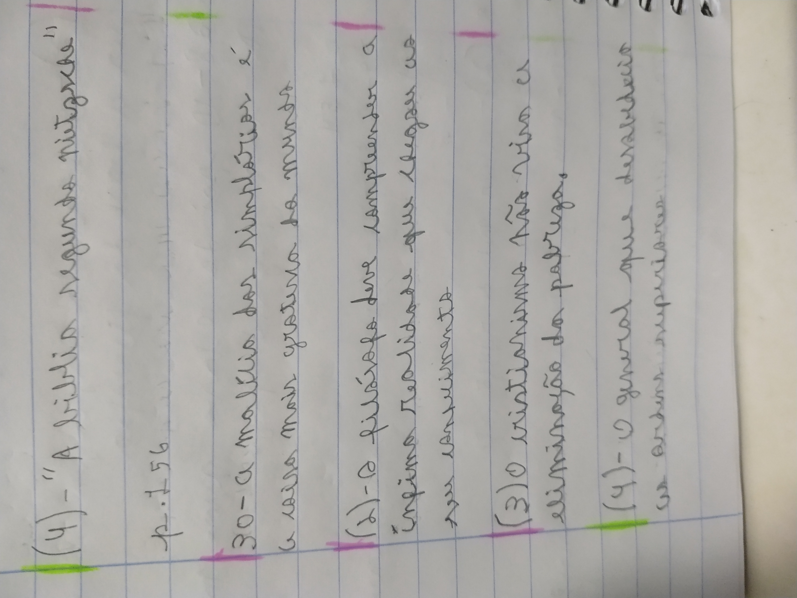
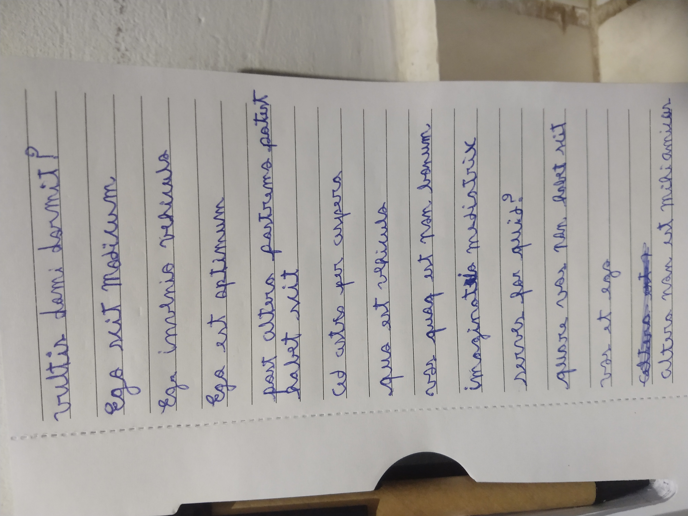

É incrível como Dante Alighieri consegue rimar tão bem na Divina Comédia, e ainda assim utilizar boas palavras e seguir de forma satisfatória o metro. Adoro esta frase que abaixo está, é imenso trágico, o tipo de frase que lhe faz ligar alguns neurônios que outrora não o estavam.

03/10/2022
08:32 PM
Dica matemática:
6×X=5×X+X
seis vezes X é o mesmo que cinco vezes X somado a X. Dá para espandir mais isso: Ex. 7×X=5×X+2×X
03/10/2022
01:52 PM
"Brasil acima de tudo, Deus acima de todos."
-Jair Messias Bolsonaro
02/10/2022
09:18 PM
Ter repulsa pelo nordeste é dever moral. That's all folks.
02/10/2022
09:18 PM
Odeio o nordeste.
02/10/2022
09:18 PM
É uma pena que o Olavo de Carvalho não pode mais comentar esta eleição, agora como eu vou saber com precisão o estado das eleições?
02/10/2022
08:35 PM
Brasileiro gosta de ser feito de trouxa KKKK. É nessas horas que me arrependo de ter saído do curso de inglês KKKK.[Contexto:Lula está ganhando as eleições]
02/10/2022
08:25 PM
Não voto, pois creio ser idiotice permitir que jovens votem, mas torço que o Bolsonaro vença. Fique apenas um dia todo em uma aula de ensino médio e saberá o porquê de eu odiar a ideia de permitir que jovens votem. Os trabalhadores devem votar, não criancinha que só sabem ficar o dia todo fazendo dancinha do Tiktok e ouvindo funk.
02/10/2022
04:25 PM
A lógica é uma área da filosofia que estuda a estrutura formal dos enunciados, sendo uma forma de pensar, de conhecer e de organizar o raciocínio sem considerar o conteúdo. O raciocínio se faz com o relacionamento de duas ideias: as premissas e a conclusão, que na lógica chamamos de inferência.
Na lógica utiliza-se dos silogismos para se confirmar determinada conclusão, sendo a forma básica de um silogismo:
Se A=B
E B=C
Então A=C
Um clássico exemplo de silogismo lógico é o texto:
Premissa: Todo homem é mortal.
Premissa 2:Sócrates é homem.
Conclusão: Logo, Sócrates é mortal.
Há ainda, na lógica, as verdades apodícticas, que são verdades lógicas irrefutáveis, exempli gratia:
2+2=4
Um juízo sintético é uma verdade apodíctica em que o predicado está contido no sujeito, como:
Todo solteiro não é casado.
A lógica formal pode ser resumida como a ciência das leis do pensamento e a arte de aplicá-los corretamente na procura e demonstração da verdade.
01/10/2022
05:42 PM
O ser humano está condenado a sofrer as consequências de suas ações. Não importa se você se arrependeu ou não, as consequências virão. Quando o peso de suas ações começar a fazer efeito, não pense que vai parar até que pague tudo que lhe convém. É o preço da liberdade.
30/09/2022
12:08 AM
Incrivelmente os prótons, nêutrons e elétrons não são as menores partículas do átomo, também existem glúons, quarks, neutrinos e sei lá mais quantas menores. Não sabia disso até uns dois minutos atrás. Vivendo e aprendendo.
29/09/2022
2:45 PM
[contexto] Isso basicamente resume o estoicismo, que, grosso modo, é uma doutrina que trata sobre a forma que você vê o mundo. (Exemplo de doutrina estóica: Se você está em um trânsito, você pode ignorar o trânsito, ou se irar pela demora. Você que decide se vai se irar ou não)
28/09/2022
8:58 PM
Uma galáxia só é visível pois emite ondas de luz para o olho humano, e o olho humano interpreta a onda de luz como cores, então, uma imagem de galáxia não passa de ondas de luz indo ao seu olho, o que torna uma galáxia bonita é a interpretação de cores que teu cérebro faz, a galáxia em si é apenas um amontoado de nêutrons, prótons, elétrons, quarks, et tutti quanti.
27/09/2022
9:25 PM
Dica de amigo: Tentar fazer amizade com o excluído da sua sala é muito mais eficaz que fazer um cartazinho amarelhino cheio de florzinhas para o setembro amarelo.
26/09/2022
1:06 PM
Como pode a rede mais usada para assuntos políticos ter um limite tão ínfimo de letras? Como querem que não se passe desinformação se não cabe nem metade de um resumo de notícia no Twitter?
25/09/2022
5:59 PM
O maior problema do pensamento não é o ato de pensar, mas sim retirá-lo do abstrato e torná-lo legível.
24/09/2022
7:59 PM
A pessoa empática ajuda os outros por dever moral, não por conveniência. Como diria Kant, fazei o bem por dever e não conforme o dever.
Nota:Claramente, na falta do primeiro, o segundo é melhor que nada.
23/09/2022
5:10 PM
Rogar pelo que se foi não é eficaz, o passado não volta, uma escolha, um vez feita, não pode ser desfeita. O que se perdeu, o que não se fez, quem não se conheceu e jamais terá a oportunidade de conhecer, tudo agoniza, claro, mas não dá para mudar. A realidade é uma só e não muda, nem que você suplique.
23/09/2022
12:05 AM
Pessoa bela sem inteligência é como rico com cartão broqueado. Só vive de aparências, não tem grana de verdade e tem preguiça de desbloquear o cartão. Desprezível...
22/09/2022 7:25 PM
Chega uma hora na vida que o peso de suas escolhas se tornam irreversíveis, daí não lhe resta mais o que fazer senão lamentar-se.
22/09/2022 1:08 AM
Premissa:Posso morrer logo.
conclusão:Logo, viverei a vida ao máximo, sem me preocupar com compromissos.
Erro:Falta nessa equação a variável "posso viver muito, logo, devo me preocupar com o amanhã", uma variavel cancela a outra, assim, a balança não tende nem a um extremo nem a outro, ficando entre os dois.
Forma certa:Posso morrer logo, ou viver muito, então, viverei bem mas me preocupando com o futuro.
A frase "viva como se não houvesse amanhã" cai por terra a partir do momento em que há o amanhã.
Todavia, viver como se não houvesse hoje também é ruim. Como diria Aristóteles, o ideal é o intermediário.
21/09/2022 2:42 PM
Às vezes uma coisa cheira como lixo, tem textura de lixo, tem peso de lixo, e não é lixo. Aprendam. Mas, claro, coloca "às vezes" nisso. Geralmente é só lixo mesmo, na maior parte das vezes, mas nem sempre.
20/09/2022 5:15 PM
Próxima vez que você tiver dor de cabeça, diga às pessoas que você tem dor no seu sistema nervoso central, daí vão te achar mais inteligente, e vão pensar que você está quase morrendo, mas isso é bônus. Claro que dor no cérebro é diferente de dor na cabeça, mas qualquer coisa você fala que é metonímia, daí vão te achar mais inteligente ainda.
19/09/2022 5:05 PM
As variáveis do universo são tantas que só nos resta torcer para que algo nos guie ao bem. Já pensou que uma simples decisão de virar a esquerda ou a direita em uma rua pode mudar completamente sua vida?
Talvez, se você virar a direita e entrar na segunda cafeteira da rua e pedir um café com extra cafeína, a atendente pergunte "nossa você está cansado?" e disso você puxa conversa e 5 anos depois vocês se casam e tem 2 lindos filhos. Ou você vira a esquerda e é assaltado por dois caras em uma moto, vai para casa, entra em depressão, e se suicida enquanto a atendente conversa com outra pessoa que pediu café e se casa com ela, e, assim, seus filhos jamais existirão.
19/09/2022 5:05 PM
Fazia tempo que não via um filme. Hoje peguei para assistir o "A Teoria de Tudo", o filme do Stephen Hawking. Que filme BOM! Te dá até umas crises existenciais KKKK. Não precisa ser cientista ou filósofo para ver o filme (até porque o filme nem trata muito estas questões), mas quem gosta vai adorar, e quem gosta de filme triste e reflexivo. De quebra também terminei o "Diário Filosófico"(livro) do Olavo de Catvalho. Hoje foi um dia produtivo.
18/09/2022 6:40 PM
Onde será que estarei daqui a 5 anos? e daqui a 10? tanta coisa muda em 1 ano, imagina 10. Peguei para ver o meu Google Fotos(serviço de fotos na nuvem do Google) e me surpreendi com minhas fotos de 4 anos atrás.
17/09/2022 7:08 PM
Algum dia eu ainda vou olhar para trás e pensar "nossa quanta merda eu fazia quando adolescente", mas enquanto esse dia não chega, tentarei não fazer merda.
Nota:Eu não erro tanto(em comparação com outrem), mas parece ser normal sua versão recente ter vergonha da passada(até porque se a passada fosse boa não seria passada.)
17/09/2022 7:00 PM
A verdade se encontra nos pequenos detalhes, juntados em um amontoado, formando um grande detalhe completo.
16/09/2022 10:12 PM
Existem pessoas que amam chuva, e existem pessoas que odeiam. A priori, podemos dizer que a felicidade ou tristeza não se encontra na chuva, mas sim na forma de vê-la.
16/09/2022 9:30 PM
Zerei todos os jogos do Portal, já posso morrer em paz. E no meu velório vai tocar Still Alive.
15/09/2022 10:45 PM
Zerei Portal 1! Que jogo bom, cavalheiros. Tanto o 1 quanto o 2 são incríveis. Portal 2 é meu jogo favorito. Peguei o 1 para jogar hoje e terminei hoje, é bem rápido para terminar o jogo. Já havia jogado o 2 e adorado, mas, incrivelmente, só fui jogar o 1 agora. Não posso deixar de citar a trilha sonora, que é impecável. Já disse antes e digo novamente, quem nunca jogou Portal está desperdiçando a vida. Se você jogou e não gostou, então não fale comigo, eu não preciso de amigos como você. [Mais sobre]
15/09/2022 10:30 PM
Segundo o efeito borboleta, se você levou um tiro no braço e ficou de cama por dois meses, seria totalmente possível que, talvez, lhe ocorreria de morrer em um ônibus caindo de um desfiladeiro se não lhe ocorresse de tomar o tiro. As coisas geralmente tendem ao bem, mesmo que não dê para ver.
14/09/2022 7:03 PM
Parece quimera, mas existem pessoas que pensam que podem compensar a falta de intelecto e cultura com enfeitinhos. Essas pessoas não dão a mínima em gastar rios de dinheiro com roupas chiques, mas têm profunda relutância em ler um machado de assis.
13/09/2022 4:42 PM
As pessoas que julgam a história são, em maioria, pessoas que não a viveram, e, para piorar, nem se deram ao trabalho de pesquisar.
12/09/2022 6:50 PM
Um quadrado, por definição, tem quatro lados, não existe quadrado que não tenha quatro lados, visto que o predicado está contido no sujeito. Não precisa-se de nenhuma pesquisa para saber disso. mas, por exemplo, se digo que "o quadrado é azul" precisaria-se examinar se é azul.
O caso 1 é um juízo analítico e a priori já se prova. O segundo é um juízo sintético que necessita de comprovação a posteriori.
11/09/2022 11:27 PM
Desculpe-me, mas não falo com ninguém com menos de 900 de QI.
Nota:Se você não entendeu, isso é uma piada, não existe ninguém com tanto QI.
10/09/2022 6:34 PM
A tilha sonora do Portal 1 e 2(jogo de videogame) é perfeita, e o jogo também é perfeito, é meu jogo favorito. É uma pena que não teve muito público e que não terá um terceiro jogo, mesmo com tantas pontas soltas. Provavelmente o jogo não ficou famoso pelo nome, quem teve a brilhante ideia de dar esse nome? Eu pesquiso "Portal" e aparece "Como fazer o portal do nether" e logo embaixo o Porta dos Fundos. Quem não jogou ainda está desperdiçando a vida.
09/09/2022 2:58 PM
Um ditador jamais assassina toda sua população, pois o que ele quer é poder e todo poder emana do povo. Ele só matará aqueles que se recusem a lhe dar poder, no caso, os que se recusam a obedecer. Um povo têm três opções, a priori, para ludibriar o ditador(o resto é a posteriori): Incentivar que todos parem de trabalhar (Fazendo o governo cair e, junto com ele, fazer a população média passar fome), tentar derrubar o governo com armas(causando uma chacina em massa de todos os lados) e pressionar o governo (com alguma tática que ele não tenha previsto ou que mesmo prevista surta efeito). Se a população toda se rebelar, o ditador irá matar metade e a outra metade ficará tão amedrontada e horrorizada que irá obedecer a ele. [Mais sobre]
08/09/2022 6:06 PM
O hino do império Brasileiro é muito superior ao novo hino, quem discorda não tem bom gosto melódico. Mudaram só para dizer que mudaram.
07/09/2022 4:48 PM
As pessoas agem buscando 4 bens: felicidade, a paz, o prazer, ou fugir do mal. Mutatis Mutandis, todos podem ser tanto maus quanto bons. As formas de bem e mal deles são: (1) bem para mim e para outros, (2) bem para mim e mal para outros, (3) mal para mim e bem para outros. dificilmente existirá alguém que busque o mal para si e para o próximo, mesmo assassinos estão buscando algo, pois eles sentem prazer em matar, ou tem motivos para fazê-lo. O bem desejável deve ser o (1), todavia, pode lhe ocorrer que fazer um pequeno mal a outros lhe faça um grande bem, ou visse versa, daí você decide o que vale a pena. Há os bens que são em si bons, e aqueles que às vezes o são e as vezes não. Exempli gratia, a felicidade deve ser sempre buscada, quando não afeta demasiado outrem, mas o prazer apenas às vezes, ou nunca, dependendo do que você entenda por "prazer".
06/09/2022 12:57 PM
Preciso arrumar tempo para assistir a saga Harry Potter toda, parei lá para o quarto ou quinto filme e fiquei com preguiça de ver o resto, embora a saga seja imenso boa. Eu deveria ler os livros também, mas está longe, muito longe, de ser a minha prioridade de leitura. Eu coloco qualquer livro do Aristóteles na frente dos livro do Harry Potter, não porque odeio a saga, mas porque eu adoro o Aristóteles, e também os livros dele me ajudariam muito mais a aprimorar meu intelecto.
05/09/2022 7:48 PM
Às vezes só é preciso mudar de perspectiva para compreender o que lho parecia incognoscível.
04/09/2022 6:44 PM
A razão prática pode ser resumida como uma estrutura de princípios que a priori podem servir como uma legislação universal, ou, em terminologia kantiana, que pode servir de imperativo categórico. Ou seja, uma máxima que, se implementada universalmente, não se destruiria ou seria danosa. Se todos tivessem a máxima de jogar lixo no chão, então não existiria mais chão para as pessoas jogarem o lixo, então a máxima se destruiria; mas, se apenas uma o fizesse, não lhe ocorreria maiores danos, mas nesse caso não seria um imperativo categórico, uma vez que não é prático, seria um imperativo hipotético a posteriori.
03/09/2022 9:59 AM
Fiz isso na informática da escola KKKK, fico imaginando a reação de quem for usar o computador depois.
02/09/2022 5:41 PM
O ser humano precisa necessariamente sofrer para adquirir algumas virtudes, ou, mutatis mutandis, todas, mais cedo ou mais tarde, mas, preferencialmente mais cedo, na tenra idade a maior catástrofe que lhe pode ocorrer é ficar de castigo por uma semana; quando adulto, o pior que lhe ocorre, chutando baixo, é você perder seu emprego e passar fome. A pessoa que não perdeu um brinquedo quando pequeno por não ter guardado, quando crescer, não saberá organizar sua casa. Há coisas que só a dor lhe ensina, por isso vós deve agradecer até pelo que lhe parece mau, não pelo que é mau, mas pelo que parece.
01/09/2022 7:13 PM
Veja a situação hipotética abaixo e siga a lógica da reflexão:
você está em uma sala cheia, um grupinho de três pessoas riem de vós porque você é baixo.
Nesta situação você pode ver isto de duas formas, a saber:
1)"Me chamaram de baixinho! Vou entrar em depressão 3! Como assim existem pessoas que não gostam de mim?!"
2)"Me chamaram de baixinho! Que cretinos, banais, dá pena deles. "
A forma que você verá está situação dependerá demasiado da vossa autoestima. Se baixa, lhe ocorrerá o primeiro pensamento; se alta, o segundo pensamento.
Nota:há também quem fala o 2(ou mesmo repete na cabeça) e na verdade pensa o 1. Tente identificar pelo tom de verdade na voz.
31/08/2022 7:07 PM
Ninguém percebe quando está bem, mas todos percebem quando estão mal.
30/08/2022 10:04 PM
Achei o começo de 1984 bom, o meio muito bom, mas o fim é esplêndido, e demasiado triste :( Achei interessante as reflexões de metafísica, filosofia e moral.
29/08/2022 5:52 PM
Uma boa forma de diminuir algo é tornando-se maior que ele.
28/08/2022 4:12 PM
Tudo o que você faz apenas aumenta a porcentagem de chance de algo acontecer, não a fará com certeza acontecer. Você pode fazer de tudo para que seu aniversário seja uma maravilha, mas você apenas aumentará a chance de ele o ser, talvez para uns 99,999%, mas ainda não seria 100%, talvez uma hora antes dele começar você tenha um ataque cardíaco e morra. Mas não tenha medo dos 0,001% de chance de dar errado, é muito pouco, não deve nem ser levado em conta, e, também, se essa pequena chance se concretizar, então realmente você devia morrer.
27/08/2022 7:35 PM
Se alguém lhe fala a seguinte frase: "O copo está muito cheio", você entenderá muito bem as palavras(o signo), mas, será que entenderia bem o significado? Quanto seria um "muito cheio"? Mais da metade? Mais que 3/4? Transbordando? Para cada qual esse valor seria diferente, todos sabem que o copo está muito cheio, mas quanto dele está cheio não se sabe. Em uma situação de extrema seca, um copo preenchido por 1/4 de água seria muito cheio, não? O que usamos nesse caso é a técnica do "geralmente", geralmente um copo "muito cheio" está entre 2/4 e 4/4 cheio, às vezes não está, mas 99% de chance de estar. Estendendo mais isso, se você diz "estudar é difícil" e seu amigo concorda, talvez ele tenha achado que você falava que estudar era difícil porque é tedioso, sendo que você falava isso porque você não tem um braço, daí seu amigo vai achar que você tem preguiça de estudar sendo que você na verdade não consegue estudar porque não tem um braço. Ou, Talvez, algum dia ele perceba que você não tem um braço e te compreenda, se ele se lembrar da sua fala e lembrar de refazer o juízo que ele tem de você.
26/08/2022 2:52 PM
Toda causa tem um efeito, antes de apoiar uma "causa" pense também nos efeitos. A causa alemã na segunda guerra, dizem, era transformar a Alemanha em uma potência mundial, mas qual foi o efeito?
25/08/2022 5:36 PM
Vossa mercê já parou para pensar sobre o quê te torna a mesma pessoa que vós era quando criança? Estava lendo A Consciência de Imortalidade, de Olavo de Carvalho, e nesse livro ele fala desse tema, é bem interessante. Será que você é você? Ou você não é você? Se você não é você, quem seria você? Você é uma ilusão? Você existe?
24/08/2022 6:00 PM
A Crítica da Razão Prática é complexa no próprio título. A começar pela "crítica", que em real significa algo como "análise". Em segundo, mas não menos complicado, a razão prática é a razão pura prática e a razão pura seria a razão a priori, sendo que a razão pura seria a razão pura teórica. Nem eu sei se entendi o que disse.
desculpem-me se errei na definição, mas duvido que alguém entenda isso sem passar meses estudando as obras de Kant. Tenho minhas dúvidas sobre se o próprio Kant entendeu essa lógica. A crítica da razão prática consegue ser complexa a priori e a posteriori KKKKK.(piada kantiana ruim)
23/08/2022 7:41 PM
Adquira agora, termometro quebrado, a nova moda da contemporaneidade! Você quer jogar vídeo game mas tem que ir à escola? Mostre o termometro quebrado à sua mãe e seja feliz jogando seu GTA 7! Você tem aula de tecnologia hoje mas não quer ir porque você esqueceu de fazer a lição da professora? Mostre o termometro quebrado ao seu pai e seja feliz!

Adquira já o seu por apenas 9,99 no beco escuro mais próximo!
22/08/2022 5:52 PM
Uma pedra e uma pedra quebrada são pedra pela essência e não pelo acidente.
Exemplo 1: A essência de uma pedra é ser dura e forte, tanto a pedra quebrada quanto a não quebrada têm os requisitos, mas, elas são diferentes pelo acidente, pois acidentalmente a pedra está quebrada, poderia não estar e ainda assim seria pedra.
Exemplo 2: Um japonês e um brasileiro são humanos, a nacionalidade é um acidente, o japonês poderia não ser japonês e ainda seria humano.
21/08/2022 7:18 PM
O erro facilita o acerto. Salvo a exceção do erro de não fazer.
20/08/2022 8:43 PM
Felicidade é uma coisa, prazer é outra. As pessoas confundem muito. Uma é boa em si mesma, a outra às vezes.
19/08/2022 8:42 PM
O ideal não é querer virar alguém tão bom que as pessoas queiram estar ao seu lado, mas é ser tão bom que de pena de quem não esteja ao seu lado.
18/08/2022 9:00 PM
Proposição 1- Penso, logo, existo.
proposição 2- Se existo, a existência existe.
proposição 3- Se a existência existe, algo a criou.
proposição 4- As leis da natureza dizem que nada se cria mas tudo se transforma.
proposição 5- Se o universo existe, algo o criou e as leis da natureza dizem que nada se cria, logo, algo maior que a natureza criou o universo bem como a natureza.
proposição 6- esse algo criou a si mesmo, uma vez que antes dele nada existia. (digo antes mas talvez não seja a melhor palavra a usar, uma vez que pode não ter existido antes, até porque isto criou o tempo)
proposição 7- o que compreendemos por algo que criou a si próprio, é anterior a tudo(inclusive o tempo) e criou as leis da natureza?
conclusão- Não é possível, pela ciência, descobrir o que criou o universo, uma vez que o que criou o universo também criou a ciência. Mas da para ver a magnitude do que o criou e imaginar as características do que tem essa magnitude.
Corolário: Toda teoria científica sobre a criação do universo não passa de mera crença, uma vez que o que o criou é anterior à natureza e, por conseguinte, anterior à área de estudo da ciência. No máximo você conseguirá compreender algo desse tema em metafísica.
Nota:tirei parte dessas ideias de Descartes, parte do canal Teísmo Racional e criei uma linha lógica para juntar tudo com algumas partes extras que me veio à mente.
Nota 2: Fiz esse texto para falar do tema e também para testar algumas regrinhas de lógica que aprendi lendo algumas páginas do livro "Introdução à lógica" na biblioteca da minha escola, por isso está tão técnico. creio que quem tenha conhecimento de lógica clássica tenha percebido os termos técnicos.
Por vezes, pensamos que aprendemos/ensinamos algo que em verdade não foi aprendido/ensinado.
Exemplo:Um professor tem dois alunos muito inteligentes. O professor diz aos alunos que para prosperarem eles deveriam basear suas vidas na frase "só sei que nada sei" de Sócrates. Os dois alunos dizem que compreenderam. Todavia, o aluno 1 entendeu que Sócrates queria dizer que não sabia nada e que por isso precisava buscar a sabedoria; já o aluno 2, entendeu que Sócrates dizia que ele, que foi um grande filósofo, não sabia de nada.
Conclusão: o primeiro buscou a sabedoria, o segundo buscou a ignorância. Os dois seguiram o ensinamento de Sócrates, mas o primeiro interpretou certo e o segundo errado. O professor pensou que os dois tinham compreendido, mas somente o primeiro realmente compreendeu, o segundo decorou e a interpretou errado.
18/08/2022 5:54 AM
Se a chance de você ganhar na mega sena é menor que a chance de você morrer, então não seria mais fácil apenas esperar alguém deixar cair 1 milhão de reais na porta da sua casa? Ou esperar alguém sem querer te fazer um pix errado de 2 milhões?
17/08/2022 6:51 PM
Quando você esquece um nome, geralmente depois de alguns segundos você consegue lembrá-lo, o que mostra que você não perdeu aquela memória [do nome], ela estava lá, só que ela lhe estava inacessível momentaneamente. Ocorre o mesmo quando você, por exemplo, vê um boneco do Max Steel em uma loja de brinquedos e relembra o que você tinha quando pequeno(quem não teve um não teve infância), a memória do seu boneco sempre esteve com você, mas estava inacessível até que sua linha de raciocínio a encontrou enquanto buscava informações de objetos/bonecos/Max Stell. Talvez, se você tivesse apenas visto um boneco parecido, sua mente lembraria do seu Max Stell enquanto seu intelecto estivesse procurando informações de bonecos.
Conclusão:O que se esquece não necessariamente sumiu da nossa mente, geralmente(ou sempre), a memória só estava inacessível ou corrompida. (Se não me engano, Freud já falou um pouco sobre esse tema de memórias esquecidas em seus livros de psicanálise, caso vossa mercê queira se aprofundar leia-o.)
16/08/2022 7:11 PM
A maior parte das pessoas que te julgam pelo teu pensamento têm um pensamento mil vezes mais controverso que o teu, mas elas não tem coragem de falar, se disfarçam numa máscara de pensamento criado à imagem e semelhança dos "camaradas", pensamentos que nem elas sabem de quem é, apenas para ganhar seu ingresso para o "grupinho bacana".
15/08/2022 3:54 PM
Negar a verdade não a torna falsa.
14/08/2022 11:10 AM
As palavras usadas para transmitir uma mensagem e o quanto específico você será ao escrever/falar são deveras importante, olhe o exemplo:
Exemplo 1:
Estou triste.
Exemplo 2:
A agonia infindável goteja na escória da minha alma em um tic tac insuportável escurecendo a efêmera vida até a grotesca discórdia inconsciente e invisível.
Os dois exemplos falam o mesmo, mas o segundo é mais específico. No primeiro você apenas está triste, no segundo você está necessitando urgentemente de antidepressivos.
13/08/2022
Creio que o primeiro passo no caminho da prosperidade de um país é ter uma cultura de verdade. Me parece que o Brasil não tem boa cultura, machado de assis é odiado pelos jovens e músicas vis e supérfluas são tidas como o padrão cultural pela sociedade. O mais notável exemplo disso é que a MAIOR festa do país é só uma desculpa esfarrapada para vestir pouca roupa e sair ficando com meio mundo. É natural que a cultura de massa seja meio vil, mas não tanto quanto no Brasil. Para piorar há uma grande falta de intelectuais verídicos. Quais são os intelectuais brasileiro? Felipe Neto? Repórteres da Globo? Casimiro?
13/08/2022 7:45 PM
Se você vai na contramão do vulgo ou você é idiota ou todos à sua volta o são. De qualquer forma você se ferra.
12/08/2022 10:16 AM
A conservação da natureza é importante, claro, mas isso deveria ser discutido em uma ou duas aulas, todavia o que me é visível é que a maior parte do tempo na escola estamos discutindo esses temas que não ajudam o aluno em nada, ao invés de estudar o que realmente importa para o aluno. Parece até que querem formar um bando de idiotas úteis e só dão esses temas nas aulas para dizer que estão "educando" o jovem. Decerto, com o dinheiro do contribuinte daria para adquirir livros que não são metade ecológica e metade questões que não dão interesse algum ao aluno, e, ainda por cima, cheios de propaganda política escrachado. Leia um livro de ciências e aprenda sobre o organismo humano e a composição da matéria, fique duas horas em uma aula de ciências e aprenda a fazer reciclagem e não jogar lixo no rio. É realmente uma piada.
P. S. Se eu quisesse aprender sobre a natureza eu assistia Animal Planet, e ainda aprenderia mais.
Nota:Claramente o erro aqui não é do docente, mas do MEC.
11/08/2022 10:32 PM
Negar piedade a si próprio é uma boa virtude. Se você tiver pena de você mesmo, você vai acabar ficando acomodado demais. Não é bom ter muita pena nem dos outros, pior ainda é ter por você próprio.
11/08/2022 1:02 PM
A palavra "ficar" me parece ser a palavra mais grotesca do vocabulário brasileiro. Não pelo seu significado primeiro, nem pelos demais, mas pela recorrência com que se ouve ela, no pior sentido que tem, e como se trata essa palavra como algo normal. Realmente é normal, mas não deveria ser. Isso é a típica palavra usada para minimizar, um eufemismo. As meninas vis falam "eu to ficando com um boy" apenas para não falar que se prostituir#m de graça pro "boy" por um ou dois dias, apenas para satisfazer desejos vis e supérfluos. Se você quer fazer esse tipo de coisa, pelo menos chame os bois pelo nome, não use de eufemismos. Essas pessoas usam de eufemismos não para enganar os outros, mas para enganar a si mesmos, mentir para si próprio fazendo-se acreditar que ainda tem uma ínfima honra e senso moral, em real inexistente. Poliamor é outra das veadagem juvenis, junto com o culto ao narguile e a ficassão.
"Quem tem muitos amores, amor nenhum tem."
10/08/2022 12:07 PM
O culto ao vício e a repulsa às virtudes é um claro sinal de deficiência mental. Infelizmente, é em extremo comum na contemporaneidade.
09/08/2022 2:42 PM
Um erro muito comum entre jovens é pensar que coisas que adultos fazem são necessariamente "coisas de adulto".
No caso, falamos de "coisas de adulto" em sentido figurado, que é o mais recorrente, como sinônimo de um feito de alguém maduro.
Se um jovem fica muito bêbado, pensando estar fazendo uma "coisa de adulto", em verdade apenas está demonstrando sua infantilidade. Beber só é proibido para os menores porque eles não têm a responsabilidade de não beber até desmaiar, e, se você bebe até desmaiar, então você está fazendo o mesmo que uma criança faria, se ela pudesse. Você teria a irresponsabilidade de uma criança com a única diferença de que você está sendo infantil legalmente. caso a criança fizesse o mesmo, estaria fazendo ilegalmente, sendo que os país que responderiam porque a criança não tem discernimento para ter essa responsabilidade, você deveria ter.
Simplificando, uma criança não bebe porque não teria responsabilidade para dosar e ficaria bêbada, se você não sabe dosar e fica bêbado então é pior que uma criança.
Nota:vosmecê poderia me refutar dizendo que em poucos goles a criança já ficaria bêbada, até por que criança já é noiada por natureza, enquanto o jovem precisa de vários goles, todavia, isso só piora a situação, pois a criança tem até mais facilidade de ficar bêbada e você não tem, e ainda assim o faz.
Nota 2:Ficar bêbado não é necessariamente criancice dependendo das circunstâncias, por exemplo, caso você esteja bêbado e faça algo irresponsável, seria criancice. Este texto serve mais como uma crítica a quem diz que beber é "coisa de adulto" apenas para se fazer de maduro, quando em verdade pessoas maduras pouca ou nenhuma vez ficam bêbadas.
08/08/2022 6:19 PM
Fazei o que lhe convém, se tudo der errado, pelo menos será por injustiça, não por erro vosso.
07/08/2022 9:12 PM
Todo fim é triste, mas todo fim é um começo, e todo começo costuma ser bem merda, então de qualquer forma você se ferrou. Esperava um texto de motivação? Pois bem, não espere isso aqui, otário.
06/08/2022 11:07 AM
Por vezes, oferecer um ambiente propício para uma reflexão é melhor que ensinar. É melhor se encontrar em um dilema filosófico do que aprender filosofia com um professor lhe ensinando. Tal qual, com a devida vontade do leitor, é melhor aprender a escrever lendo do que em aulas de português. (Não me refiro aos termos técnicos, claramente).
Quando alguém se encontra em uma situação na vida em que é vital utilizar, por exemplo, álgebra, a pessoa vai usar e nem vai saber que usou. Também ocorre do conhecimento ser mais fundamentado quando a pessoa sofre ao adquiri-lo. por exemplo, se alguém não estuda e repete de ano, essa pessoa vai ter bons motivos para começar a estudar. O método de ensino da história do escravo de ménon, personagem em um diálogo de Sócrates, pode ser um bom exemplo de ambiente propício à reflexão.
05/08/2022 9:57 PM
O que veio a ser nunca mais volta ao não ser. O erro que você cometeu jamais voltará a não ter acontecido, ficará marcado pelos milênios dos milênios. Tudo o que ocorre nunca mais volta a não ter ocorrido, jamais volta ao não ser. É bom saber disso antes de fazer bobagens, senão vai acabar manchando sua biografia.
04/08/2022 6:11 PM
Não sei por que, mas qualquer frase aleatória, quando falada em latim, fica parecendo ou algo muito sábio ou um feitiço. Exempli gratia: Femini domi dormit, o mesmo que "a mulher dorme em casa". Tem também "mutatis mutandis", o mesmo que "mudando o que tem de ser mudado".
03/08/2022 9:53 PM
Se alguém lhe falasse agora "cientistas descobriram que o tempo sempre esteve correndo para trás" você entraria em pânico ou pensaria que isso não quer dizer nada e que só se está usando a palavra "para trás" no lugar de "para frente" quando tanto para trás quanto para frente não faria diferença alguma? é como se alguém dissesse que o brasil está agora na parte debaixo da terra, primeiro que isso não influenciaria em porcaria nem uma, em segundo lugar que não existe para cima ou para baixo no espaço, pois para isso se precisa de um parâmetro de comparação, no caso da terra esse parâmetro é a gravidade, onde a gravidade puxa é baixo e onde não puxa é cima. O parâmetro de comparação do tempo é o próprio humano. Se você vê o tempo passando então o tempo está indo para o futuro.
02/08/2022 9:03 PM

02/08/2022 9:03 PM
O eu de 8 anos avisou, esperem um presidente de nome:Eduardo kkkk

Modificações do espaço-tempo e política contemporânea você vê aqui.
01/08/2022 4:34 PM
É fato que um pessoa é um grão de areia comparada a um planeta, todavia essa afirmação não quer dizer que um planeta é mais importante ou complexo que uma pessoa.
Um planeta não consegue pensar, não consegue sentir e muito menos sabe da própria existência, a única diferença de um planeta e uma pedra é, mutatis mutandis, o tamanho. Um planeta não decide se vai para frente ou para trás, ele vai onde a órbita o manda ir. Tamanho é algo importante, pois uma pedra grande é bem mais destruidora que uma pequena, mas não tanto quanto inteligência. Então o planeta não é tão especial ou complexo quanto um ser humano, inclusive os dois são feitos de átomos, mudando apenas a configuração da matéria. Humanos tem células, órgãos, células de defesa, ossos, cérebro e tutti quanti, já o planeta...
"Eu sou pequeno em relação ao universo"
Claro que é, mas apenas em tamanho, e, afinal, no que tamanho torna algo especial? Eu nunca vi um planeta criar uma teoria da gravidade, embora ele a use mais que nós. Se você se surpreende com uma rocha espacial, só não tem um derrame ao olhar a própria mão se mexendo porque está acostumado a vê-la fazer isso.

Reprodução de: noite estrelada, de Van Gogh.
P.s. Este texto não tem a intenção de ser uma crítica aos planetas, caso você seja um planeta não leve ao pessoal, ok?
31/08/2022 4:50 PM
O reino do pó e areia pode parecer lindo,
todavia em pouco se desfaz em puro limbo.
31/07/2022 8:17 PM
"Os opostos se atraem"
Criei algumas regrinhas para essa frase que me parecem ter sentido. Se você gosta de estudar e seu amigo gosta de festas, isso vai lhe ajudar a gostar dele, pois você gostaria de ir a festas mas não tem tempo, pois estuda, e o mesmo ocorre ao teu amigo, mas o inverso, você gosta dele porque você queria fazer o mesmo que ele, mas não pode. Caso você goste de rock e seu amigo goste de pop, vocês podem gostar um do outro pois vocês dois gostam de musica, ou porque ele também gosta de rock, mas não tanto quanto pop. Também ocorre de seu amigo aprender a gostar de rock depois que você mostra as bandas que você gosta e dá motivos para ele gostar de rock. Talvez você seja de direita e seu amigo de esquerda, daí vocês podem esquecer política e falar sobre outros temas que vocês gostam, ou vocês falam de política de forma civilizada, daí vocês vão gostar-se pois os dois gostam de política, e também da para você tentar converter seu amigo ao teu lado, claro. Caso sua caneta seja azul e a do seu amigo vermelha, vocês podem falar sobre borrachas, pois suas borrachas são as duas amarelas.
01/07/2022 10:21 AM
Eu coloco minhas esperanças no futuro, colocar no presente é coisa de gente mal da cabeça.
30/07/2022 10:27 PM
Existem dois seres dentro de cada qual, a saber, o racional e o irracional. O racional consegue controlar o irracional, mas para isso precisa de bastante vontade e engenho.
O você racional sabe que deve estudar, mas o irracional não quer isso, ele quer o supérfluo, o instantâneo, o agora, mas o racional pode forçar o irracional a aceitar estudar, mas precisa-se de muita força de vontade.
30/07/2022 7:57 PM
Contexto é algo importante, mas na
Título da página
hora de correr para "contar AQUEEELA fofoca" geralmente esquecido. Além disso, antes de julgar uma frase, também deve-se ver a quantidade de significados que determinada frase contém e qual o correto, antes de julgar o primeiro que sua ínfima percepção compreendeu. Se eu falo que vou doar X dinheiro a um orfanato você não deve perguntar "por que você não doa esse dinheiro para as crianças órfãs?" porque está claro que:se eu vou doar para um orfanato indiretamente doarei aos órfãos. Isso ocorre, também, nos textos, pois eu posso escrever algo querendo dizer outra coisa ou dizendo algo fácil de entender, mas apenas para quem tem o devido conhecimento. A frase "Só sei que nada sei", de Sócrates, pode ser entendida como um cultu da ignorância a quem não conhece o contexto da história de Sócrates.
"Não meça o mundo pela sua pequenez"-Anônimo
Essa frase pode te ajudar a não cometer erros ao julgar os outros.
29/07/2022 10:35 PM
Aviso:estou usando este site como repertório de ideias que volta e meia me hão de ocorrer. NÃO leve essas ideias a sério e NÃO atribua à minha pessoa, pois elas estão aqui apenas para serem guardadas para posteriormente eu verificar se para alguma há futuro. Caso vós tenha gostado do conteúdo aqui presente e da escrita, então saiba que eu creio em grande parte do que está aqui presente e eu que escrevi, todavia, caso não tenha gostado, então saiba que provavelmente eu copiei esses textos de algum lunático da deep web e não refletem meu pensamento, ok?
28/07/2022 9:18 PM
O pensamento sempre vem com um certo grau de seu todo em formato abstrato demais para pôr em palavras. Necessita-se de demasiado engenho para pô-lo em forma descritível. Os sentimentos não são descritíveis, pois se você sente dor você não pode mostrar sua dor a alguém, somente comparar sua dor, mas não descrevê-la. Eis uma das limitações naturais da língua. Você pode dizer "minha dor é como se eu tivesse levado um tiro no meu braço", mas a pessoa só vai ter uma ideia aproximada do que você sente se ela já tiver levado um tiro, pois daí ela vai ter um parâmetro de comparação. Pôr emoções em palavras é impossível, pois é abstrato demais para descrever, só da para usar parâmetros de comparação. Você pode amar seu amigo, mas nunca dizer:"eu te amo esse tanto". Não obstante, da para dizer:"eu te amo o mesmo tanto que eu amo morangos", todavia você não pode mostrar o gosto que você sente quando come morangos a ele, e talvez ele não goste de morango, daí ele vai achar que você odeia ele.
27/07/2022 6:09 PM
A melhor forma de implantar uma ditadura não é com armas, mas pela cultura, pegar todas suas ideias ditatoriais e jogar na cultura, de pouco em pouco. Na produção de um filme, por exemplo, dê essas ideias ditatoriais ao personagem secundário. no próximo filme, depois que o povo tiver se acostumado mais com a ideia, dê ao principal, mas faça-o citar pouco essa ideia. depois que se acostumarem faça seu próximo filme girar todo em volta das suas ideias e modifique a lingua falada, faça os personagens citar "democracia" sempre que forem se referir a um país melhor. Faça isso em todas as mídias e você verá o povo pedir uma ditadura com vozes de "QUEREMOS MAIS DEMOCRACIA!!!". Se alguém for contra você, chame-o de antidemocrático. Isso se chama gramscismo cultural.
25/07/2022 9:12 AM
Fiz um resumo de "Aristóteles em nova perspectiva" de Olavo de Carvalho. Eis o link:Clique aqui
24/07/2022 2:46 PM
Eu criei um codigo python que armazena informações pessoais de quem eu conheço. Eu insiro os dados e o nome da pessoa e ele guarda para quando eu precisar consultar. Me inspirei no Sherlock Holmes.

23/07/2022 12:40 AM
Uma ideia polêmica de Olavo de Carvalho é "não namore um ateu". Fica mais fácil entender sabendo que olavo pensa que amar é querer bem a outro e, diz ele, querer que alguém vá para o inferno pela eternidade não é querer o bem dele. Diz ele ainda que se for preciso morrer para que o outro não vá ao inferno é bom que ocorra, pois morrer não é o problema mas pelo que se morre. Ele fala, também, que grande parte de quem diz que "ama", não o faz. Bem polêmico.
23/07/2022 12:19 AM
me falta 166 páginas para eu terminar de ler a saga Sherlock Holmes toda que tem praticamente 1800 páginas na minha versão. Bem pouco.
23/07/2022 10:19 PM
Ninguém é o mesmo que ontem, uma vez que ontem você agia de X forma, hoje de X-(Y×2-5). Isso ocorre porque somente conversando com alguém, lendo um livro ou assistindo um filme você já muda sua forma de pensar completamente. Mas ainda há de ser vós próprio pois lhe conserva a essência. Um homem azul que se pintou de vermelho não deixou de ser homem, apenas mudou de cor, sua essência continuou, a saber, ele ainda fala, anda, come e tutti quanti, faz tudo que um homem tem que fazer para ser chamado homem, a cor dele é apenas um acidente. Assim também ocorre a vós, pois você mudou de pensamento mas ainda é você, por que conservou a essência que define a palavra "você".
23/07/2022
Descartes me parece a melhor opção para começar a compreender metafísica, a metafísica de Spinoza me parece ruim. Spinoza acredita em Deus mas não na Bíblia, como alguém tão contraditório em teologia vai opinar sobre metafísica? O pior é que a obra dele TODA gira em torno de Deus, sendo que ele não acredita na Bíblia.
De qualquer forma, eu estou lendo Ética porque é sempre bom ver o outro lado, até porque relógio quebrado acerta a hora pelo menos duas vezes ao dia. Sempre da para tirar algo bom do que não é tão bom.
23/07/2022
Nikola Tesla fala em sua autobiografia algumas vivência bem estranhas. Ele literalmente fala que tinha umas visões das invenções dele e que ele conseguia manipular essas visões para fazer testes de suas invenções na sua imaginação.
23/07/2022
A maior vantagem desse Facebook que criei é a privacidade , já que só da para entrar pelo link. Então, por exemplo, caso eu queira esconder um cadáver e tiver que postar um texto perguntando se devo enterrar no jardim ou jogar no lixo reciclável, eu posto aqui e mando o link a quem eu queira, daí eles me respondem que devo jogar no lixo reciclável para salvar as tartarugas aquáticas.
23/07/2022
A única pessoa que conheço que gosta minimamente de filosofia gosta do Nietzsche. Ora, melhor não gostar que ler Nietzsche, Niet era um reclamão depressivo que só queria ferrar com tudo. "Não há verdades absolutas"-reclamão depressivo
Ora, será que essa fala é verdadeira ou é falsa???
23/07/2022
"Para curar o medo da rejeição, pense assim:eu gosto de todo mundo e quem não gosta de mim não é bom da cabeça"- Olavo de Carvalho
23/07/2022
Tenho eu o costume de a cada pagina do livro "Diário Filosófico" fazer uns 3 pequenos resumos, um para cada parágrafo da página e colocar o numero da página do lado.
Faço isso pois, como já falei acima, o livro é como um manual de vida, e dessa forma fica mais fácil consultar esse manual. Eis abaixo:

23/07/2022
O Diário Filosófico de Olavo de Carvalho é excepcionalmente bom, o livro é literalmente um manual de vida, Olavo fala de tudo nele, e quando eu falo tudo, é TUDO MESMO.
23/07/2022
"O problema não é ser odiado, mas ser odiado pelo motivo errado."
Ora, se você é odiado pelo motivo certo, não está lhe ocorrendo nada mais que justiça.
23/07/2022
O que poucos sabem é que Isaac Newton mexia com alquimia(por isso muitos o apelidam de bruxo) e Albert Einstein era adúltero(e há quem diga que ele plagiou algumas de suas teorias).
23/07/2022
Um dos ensinamentos de Olavo de Carvalho bastante interessante é a lógica de: "se os outros não querem ser seu amigo então veja se você é um idiota, pois se você for idiota então eles tem motivos e você deve tomar vergonha na cara e não o ser. caso você não seja, então os outros são um bando de idiotas, e você gostaria de fazer amizade com idiotas? " Olavo sempre direto em suas afirmações.
Nota:é claro que esse texto não quer dizer que "TODOS são idiotas se não forem teus amigos", não tire uma conclusão errônea e me atribua o erro, esta frase é como a "se não deu certo é porque não deveria dar" Talvez se tentasse mais daria, mas a pessoa fala isso para mostrar que a culpa daquilo não é tua, seguimos uma linha lógica parecida, mas com a diferença de que: se alguém não quer ser amigo de alguém legal, decerto é mau da cabeça, e a culpa da enfermidade mental do companheiro não é tua.
23/07/2022
Em opinião minha, a melhor forma de escrita em um livro é a mais arcaica possível, pois tem muitas palavras diferentes e demasiado elegantes, comecei a ler os sonetos de Luis Vaz de Camões por isso, ele, por ser de uma época mais antiga, escreve de forma bem arcaica. Mas creio que quem ganha nessa matéria é Dom Quixote.
"Em nome de Dulcineia!!!"
23/07/2022
Durante as aulas vagas geralmente eu fico lendo alguns livrinhos de filosofia grega que adquiri, ficar discutindo picuinhas não me parece a melhor forma de usá-las, a menos que sejam picuinhas interessantes. mas às vezes, quando não da para o fazer, por causa do barulho de gritaria, eu fico treinando um pouco de latim. eis algumas frases que consegui formar. deixando claro que não sei praticamente nada de latim e esse pouco abaixo tem significados bem simples, como: "aos astros pelas dificuldades" o mesmo que "ad astra per aspera".

03/07/2022
Bem vindo ao Edubook o novo veículo de comunicação criado por Eduardo Kenji Takemoto (Também conhecido como Facebook 3 plus++ deluxe edition)